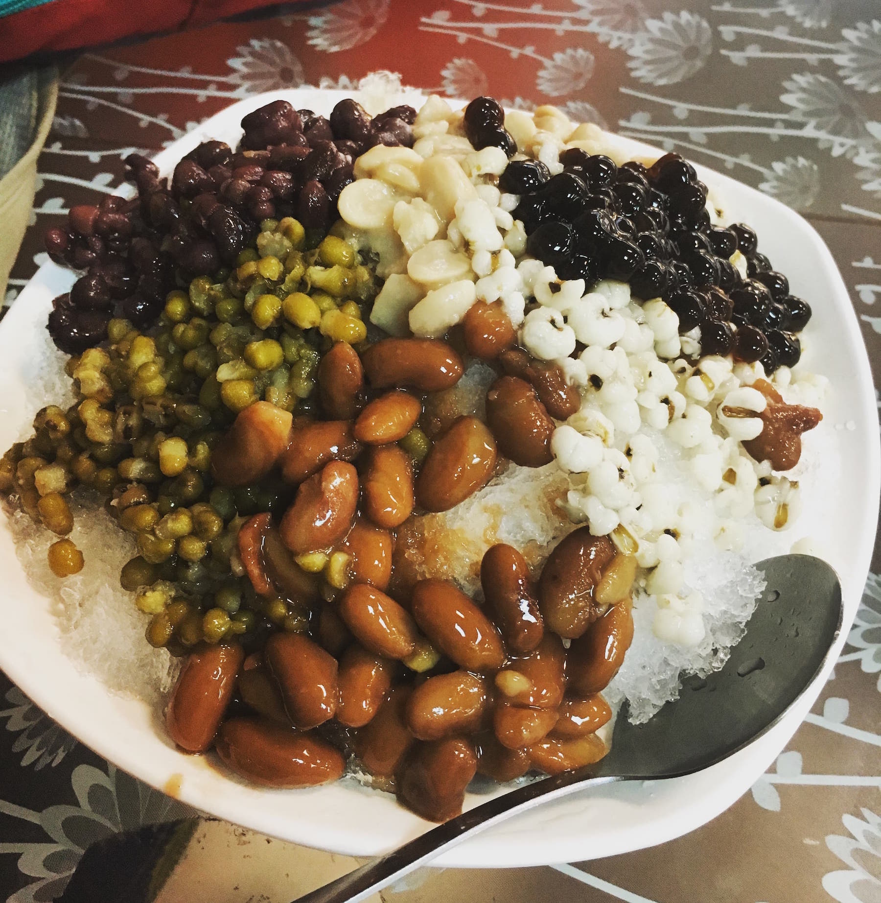
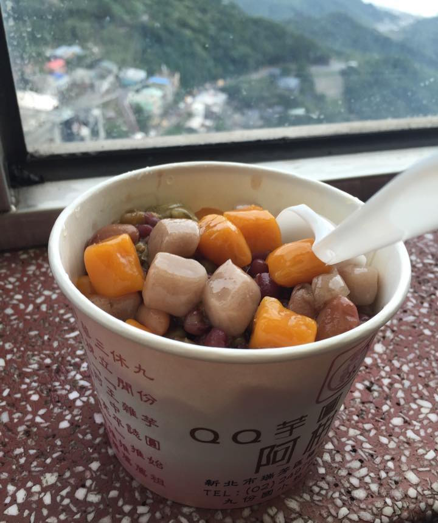
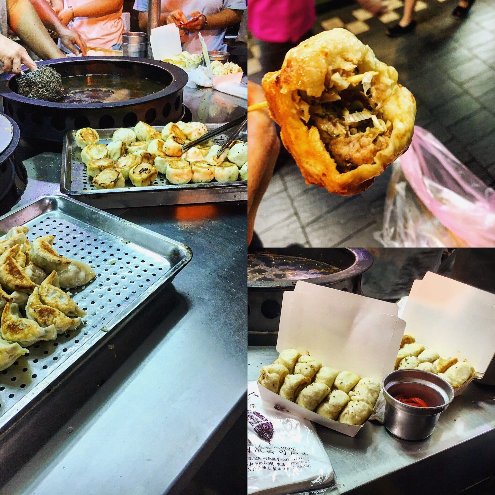
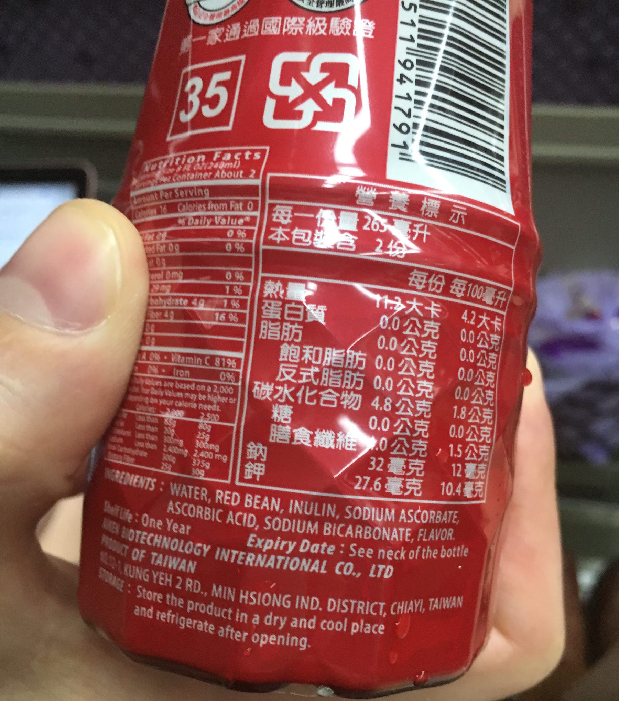
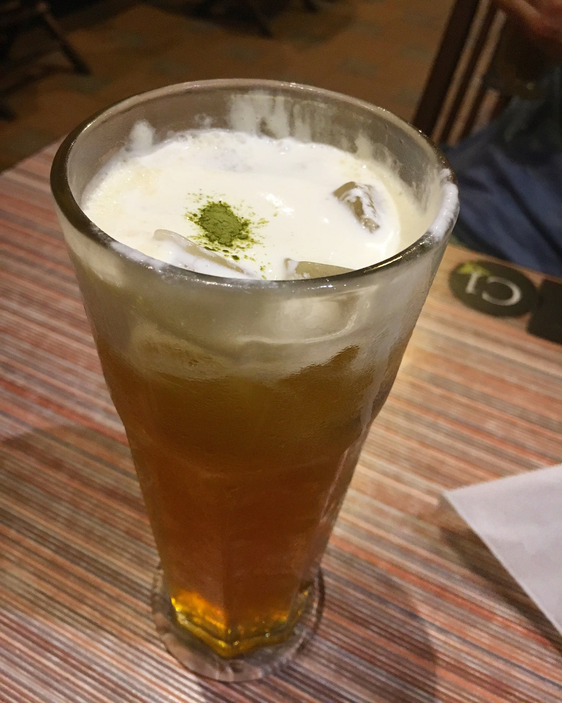

#1. Shaved ice with traditional bean toppings
I’m not talking your standard artificially flavored concoction of ice cream desserts and fruit--these giant crunchy piles of tiny ice shards are drizzled with a sweet syrup and topped with a variety of sweet stewed beans and jellies.
Shaved ice with boiled peanuts, red bean, pinto bean, mung bean, job's tears, and large tapioca pearls. Picked this up at an outdoor market in Hualien!
The result is a lightly sweetened healthy dessert, high in protein and fiber, with beans serving as the sweet topping that mixes into the pile of ice beneath, allowing you to rapidly scarf down some hydration and cooling goodness in the summer months.
My favorite toppings include peanut, red bean, mung bean, and job’s tears (also commonly sold as “Chinese pearl barley”). Some places will also serve tapioca pearls, sweet silk tofu, herbal jellies, and an assortment of fresh fruit/ice cream on top as well. Street vendors and shops carry these everywhere. They usually showcase a large assortment of colored bean stews and jellies, then assemble a mountain of goodies in front of you.
Sweet glazed taro and yam balls in a shaved ice bean stew at the top of Jiufen
A similar, yet less common version uses a warm bean stew with colored taro and yam mochi balls, poured over a pile of shaved ice. If you can find these, get ‘em!
#2. Fresh Papaya Milk
Commonly seen at night markets and street stalls, these simple smoothies are typically thrown together with only three ingredients: milk, ice, and fresh ripe papaya. The result is perfect. Pink, frothy, creamy, and the natural sweetness of the papaya is unlike any fruit you’d find imported elsewhere.
Unfortunately I didn't snap a photo. You'll know it when you see it!
These stalls are usually set up with a huge fresh fruit display and carry a wide variety on their menus, but the papaya is a classic and I think it really stands out from the rest. They sell papaya flavored milks in local convenience stores, but it’s just a bunch of artificial flavoring and sugar additives. Go for the real stuff outside!
#3. Pan fried buns (生煎包)
Out of all the typical tourist food recommendations, I do have to call this one out as my favorite.
These decadent miniature steamed buns have a thin pan-fried crust on the bottom, offering a crunch as you sink your teeth through the fluffy, slightly sweet bread to the spiced juicy pork in the center. Usually offered with a soy or spicy sauce, these are a must-eat if you find them out and about!
Pan fried buns at a night market in Taipei, just south of Taipei 101
What’s outstandingly clear at any stand that serves these is just how wonderfully fresh and handmade everything is. They stuff the buns in front of your eyes, and every ingredient is meticulously prepared. Find these at most night markets, especially in Taipei.
#4. Red Bean Water
This is a particularly rare local find--after discovering this drink I wasn’t even able to find it online for purchase anywhere by the bottle. If you’re a fan of red bean desserts and red beans in general, this is a light nutritious essence water with a flavor that is distinctly natural and amazing.
Back of a red bean water bottle. I miss these already!
At around 30 calories per bottle, these pack a ton of vitamin C, fiber, and nutrients from red beans without being overpowering or heavy. Healthful enhanced water comes to mind, and it quenches thirst on long hikes way better than any sugar-loaded sports drink. You can find these at any convenience store in Taiwan, sitting among the bottles of brewed tea and water.
#5. LATTEA’s iced tea topped with salted sweet cream
Crazy enough, in my top 5 is a specific drink from a popular chain of tea cafes in Taiwan. Looking deceptively like a light beer in a tall glass, this lightly sweetened iced tea is topped with a salted sweet whipped cream.
The "original" Lattea, a strong-bodied iced Oolong tea with a sprinkle of matcha atop the sweet salted cream
Instead of mixing it in and sipping with a straw, enjoy by tipping the glass gently and gathering the salted cream at your upper lip as you sip the cold sweet tea underneath. The two flavors mix perfectly, creating a unique experience that can’t be matched even though “salted crema” is catching on in some boba tea places elsewhere. This drink is truly the inspiration for the iced tea of your dreams.
For those who don’t like especially sugary beverages, you’ll be surprised to find that the default sweetness here is very light, and the tea is strong bodied.
They also serve awesome fries, dumplings, and chicken here in case you like a light meal with your tea!
This is only a glimpse of all the amazing things I ate in Taiwan. There's no shortage of spectacular food, and I'd love to hear your favorites too! I don't have comments up and running yet, but tweet at me!